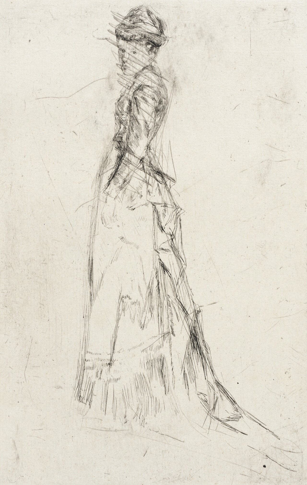

The Soul of Handcrafted Dressmaking
Founded on Mercer Street in Manhattan, Moda Frock Cove was born from a singular passion: reviving the meticulous, slow art of bespoke haute couture dressmaking. While the global apparel industry shifted toward speed, synthetics, and disposable trends, our atelier remained steadfast in our devotion to timeless textile artistry.
Every gown we create is cut individually by hand, draped directly onto personalized dressmaker mannequins, and assembled using silk thread and historical hand-sewing techniques. We believe clothing should be an enduring expression of human dignity, grace, and exquisite beauty.

The Supremacy of Pure Mulberry Silk
We source our silks exclusively from historic mills in Lyon, France and Como, Italy, where weavers have perfected sericulture and shuttle-loom weaving across centuries. From featherweight 6-momme silk chiffon to architectural 40-momme silk crepe-back satin and iridescent silk organza, our textiles possess an unmatched natural luster and breathability.
Our buttons are hand-turned from natural mother-of-pearl, our waist stays are cut from pure silk grosgrain, and our boning channels are encased in plush silk velvet for supreme wearer comfort.